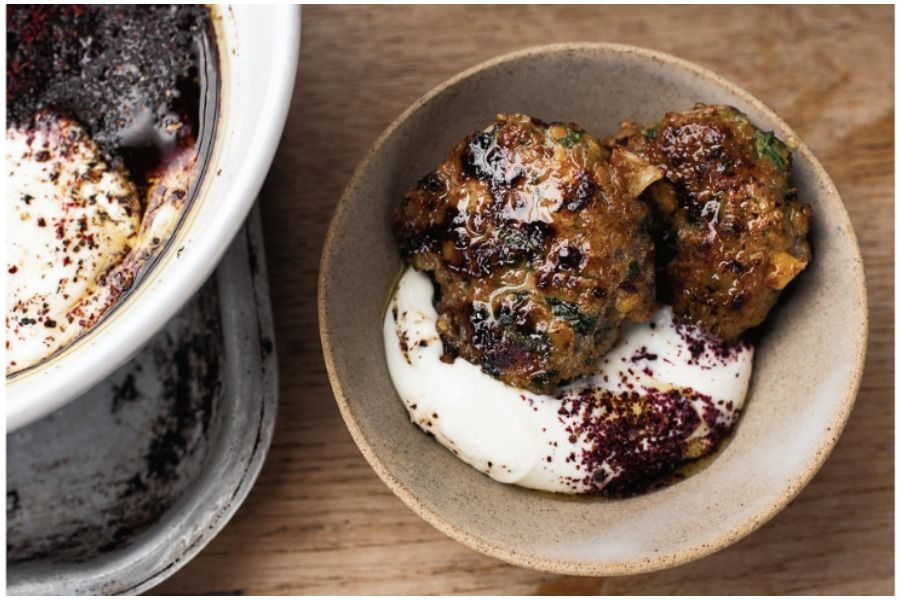

Lamb Burger

This is the ultimate gourmet burger. Yotam Ottolenghi's legendary recipe transforms a simple patty into a masterpiece. Rich, juicy lamb is studded with the earthy crunch of pistachios and brightened by a generous handful of fresh herbs. It's a flavor-packed bite that's both sophisticated and deeply satisfying.
Ingredients
For the sumac yogurt sauce:
- 1 cup Greek-style yogurt
- 1 tablespoon sumac
- 1 tablespoon olive oil
- 1 tablespoon lemon juice
For the lamb and pistachio patties
- ½ cup shelled pistachios
- 1¼ cup arugla
- 1 onion, quartered
- 1 large garlic clove, peeled
- 1 pound 2 ounces ground lamb
- 3 tablespoon olive oil
- Salt and black pepper
Instructions
- Mix together all the ingredients for the sumac yogurt sauce and keep in the fridge until needed.
- To make the patties, put the pistachios into the bowl of a food processor. Blitz for a few seconds, to roughly chop, then put into a medium bowl. Add the arugula to the processor, blitz for a few seconds to roughly chop, then add to the bowl of pistachios. Continue with the onion and garlic, to form a smooth paste, and add to the bowl. Add the lamb, 1 tablespoon of oil, 3/4 teaspoon salt, and a good grind of pepper. Mix well to combine, then, with wet hands, shape the mix into about 20 patties. They should each be about 2 inches wide, 3/4 inch thick, and weigh about 1 1/2 ounces.
- Put 1 tablespoon of the oil into a large nonstick frying pan and place over medium heat. Once hot, add the patties—as many as you can fit without crowding the pan—and cook for 7 minutes, turning about 3 1/2 minutes, until golden brown and just cooked through. Keep warm while you repeat with the remaining patties. If you need to, add another tablespoon oil to the pan during the process. When the patties are all cooked, pile them onto a large platter and serve with the sumac yogurt sauce.
Home